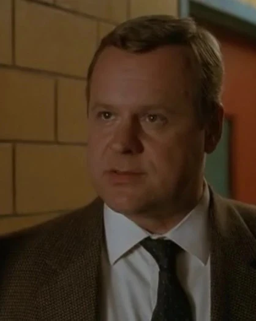
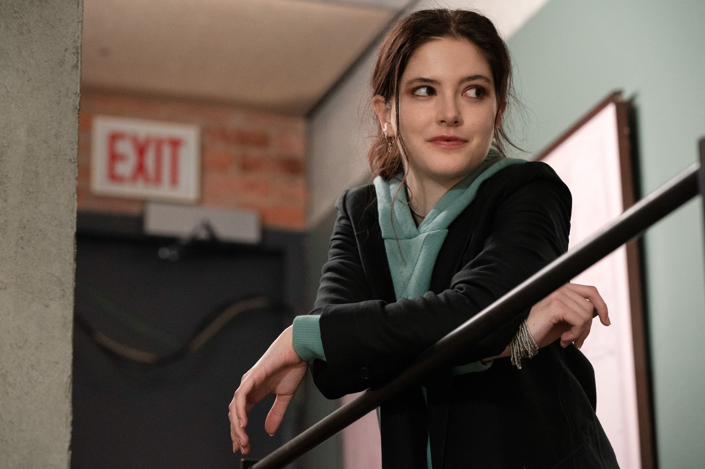

Cuando lees este nombre, seguramente piensas en una sola cosa:

"En el sistema de justicia criminal. La ofensas de origen Sexual se consideran especialmente perversas."
"En la ciudad de Nueva York, los detectives que investigan estos terribles delitos. Son miembros de un escuadron de elite conocido como:"
Unidad de Victimas Especiales
Sin embargo, y aun que tienes razon. La Ley y el Orden no es simplemente eso. De hecho, existe untra trilogia de series que ocurren en el mismo universo. Pero vamos por partes ¿ Que es la Ley y el Orden?
Law & Order: Special Victims Unit (o simplemente Law & Order: SVU; titulada como La ley y el orden: unidad de víctimas especiales o La ley y el orden: UVE en Hispanoamérica y Ley y orden: unidad de víctimas especiales o Ley y orden: UVE en España)
es una serie de televisión estadounidense de drama policial, legal, procesal y criminal ambientada en la ciudad de Nueva York donde también se produce principalmente. Al estilo de la original Law & Order, los episodios a menudo se "extraen de los titulares" o se basan en crímenes reales que han recibido atención de los medios.
Creado por Dick Wolf, la serie se estrenó en NBC el 20 de septiembre de 1999, como la segunda serie en la exitosa franquicia de Law & Order. Law & Order: Special Victims Unit ha sido nominado y ha ganado numerosos premios, incluido el Emmy por Mejor actriz principal en una serie dramática para Mariska Hargitay
el primero, y hasta la fecha, el único Emmy que fue recibido regularmente en cualquier franquicia de Law & Order series. Es la serie de televisión en horario de mayor audiencia estadounidense no animada con guion más antigua
desde la cancelación de la original Law & Order el 24 de mayo de 2010 y es la cuarta serie de horario estelar con mayor duración de Estados Unidos en una gran cadena de transmisión.
Pero como dije, y como habras notado. Esta es solo UNA serie. La Ley y el Orden, es una una franquicia con 3 titulos diferentes, pero conectados

"Elenco aproximado de todos los perosnajes de la franquicia en la actualidad"
Aqui, te contare las 3 series diferentes. Con:
Resumen de la trama
¿ Que hacen ? ¿ En que se especializan ?
Personajes
Vivos y muertos
El comienzo de la serie
¿ Como surge la Unidad ?
Para empezar. Son 3 series en total. Las cuales son las siguientes:
La Ley y el Orden: Unidad de Victimas Especiales
Law and Order
La Ley y el Orden: Crimer Organizado
Y de estas son las que vamos a profundizar.
La Ley y el Orden: Unidad de Víctimas Especiales (UVE)

La Unidad de Victimas Especiales de Manhattan, de la policia de Nueva York, trabaja con casos relacionados a crimenes sexuales. Encargandose de investigar, detener y procesar a:
Violadores,pederastas, pedofilos, entre otros
Al ser una serie que empezo desde el 99. Sus personajes han ido variando conforme corria el tiempo. La unidad actualmente esta conformada por:
| Personaje |
Puesto |
Estado |
Foto |
| Olivia Benson |
Capitan |
Viva/Activa |
 |
| Odafin "Fin" Tutuola |
Sargento |
Vivo/Activo |
|
| Joe Velasco |
Detective |
Vivo/Activo |
|
| Terry Bruno |
Detective |
Vivo/Activo |
 |
| Kate Silva |
Detective |
Viva/Activa |
|
| Sonny Carisi |
Fiscal dto. Adjunto (Ex Detective) |
Vivo/Activo |
|
Sin embargo, otros personajes iconicos merecidos de mencion, pero que ya no trabajan alli, son:
| Personaje |
Puesto |
Estado |
Foto |
| Mike Dodds |
Sargento |
Muerto |
|
| Elliot Stabler |
Detective |
Vivo/Retirado (De la Unidad) |
|
| Nick Amaro |
Detective |
Vivo/Retirado (De la Unidad) |
 |
| John Munch |
Sargento |
Retirado (De la policia) |
|
| Rafael Barba |
Fiscal dto. Adjunto |
Retirado (De la Unidad) |
 |
| Amanda Rollins |
Detective |
Viva/Retirada |
 |
A pesar de no tener registros exactos. Se sabe que la Unidad de Victimas Especiales surge a mediados de los años 90´s, entrando a los 2000, en el Distrito 16 de la NWPD (Nueva York Police Departament) en base a la cada vez mas alta necesidad de un equipo especializado que enfrente estos tipos de delitos, los cuales se volvian cada vez mas frecuentes.
Detectives con entrenamiento ante crimenes sexuales, violencia domestica, abuso infantil y crimenes a personas vulnerables. Quienes conforman esta Unidad en sus inicios. Junto a la supervison del Capitan Don Cragen, son:
Detective Monique Jeffries
Detective John Munch
Detective Elliot Stabler
Capitan Donald Cragen
Detective Brian Cassidy
Law And Order

Por mas sorprendente que te parezca. UVE no es mas que una rama de esta serie. No es para menos, ya que hablamos de los originales, mismos quienes han regresado al ruedo luego de una cancelacion en el 2010, regresando para 2022
¿ Quienes eran para ser tan importantes ? Pues su titulo les precede, ya que esta serie enfoca a la unidad de Homicidos. Una de las unidades mas basicas y importantes de la policia sin lugar a dudas. Los mismos encargados de investigar uno de los crimenes mas comunes que existen. Mayoritariamente casos complejos, con victimas de alto perfil, multiples sospechosos o repercuciones legales importantes
| Personaje |
Puesto |
Estado |
Foto |
Jessica Brady |
Teniente |
Viva/Activa |
|
| Nicholas Baxter |
Fiscal dto. Adjunto |
Vivo/Activo |
|
| Nolan Price |
Fiscal dto. Adjunto |
Vivo/Activo |
|
| Vincent Riley |
Detective |
Vivo/Activo |
 |
| Jalen Shaw |
Detective |
Vivo/Activo |
|
Como puedes ver, Homicidos en compracion a Victimas Especiales, se encuentra bastante corto de personal en la actualidad. Cosa que resulta curiosa, incluso alarmante, teniendo en cuenta la importancia de la unidad. Pero, veamos que tal estaba en sus inicios
| Personaje |
Puesto |
Estado |
Foto |
| Max Greevey |
Sargento |
Muerto |
 |
| Mike Logan |
Detective |
Transferido |
|
| Donald Cragen |
Capitan |
Transferido |
|
| Benjamin "Ben" Stone |
Fiscal Adj. Principal |
Retirado/Muerto |
|
| Adam Schiff |
Fiscal dto. |
Retirado/Muerto(Asumido) |
|
| Paul Robinette |
Fiscal Adj. Secundario |
Retirado/Vivo |
|
Resulta sorprendente el hecho de que una de las unidades con mucha importancia dentro del deparatamento tenga una cantidad muy poca de detectives a su disposicion. Incluso desde sus inicios fue asi.
Ahora bien. Hablemos de su creacion.
Nuevamente. No se tiene registro de su fecha de su creacion. Pero debido a la importancia de esta, y los años en los que transcurre. Se puede asumir que ya existia desde la decada de 1980-1970, casi al par del departamento de la NYPD en Manhattan
Sargento Max Greevey
Detective Mike Logan
Fiscal Adj. Principal Ben Stone
Fiscal Adj. Secundario Paul Robinette
La Ley Y El Orden: Crimen Organizado (OC)

Y terminamos con la mas nueva y reciente de todas. Pero a su vez, la que mas potencial tiene.
La oficina de control del Crimen Organizado, como su nombre lo indica, esta especializada a todo lo relacionado al crimen organizado. Mafias, redes internacionales, figuras de alto perfil, ciber hackers, cripto fraudes, narcotrafico, corrupcion politica, Y un largo etcetera
Con el protagonismo de uno de los detectives mas iconicos de la franquicia, y dirigida por una nueva Sargento. Esta unidad enfrentara todo eso y mas. Haciendo su debut en 2021, y siguiendo hasta dia de hoy.
| Personaje |
Puesto |
Estado |
Foto |
| Ayanna Bell |
Sargento |
Viva/Activa |
|
| Elliot Stabler |
Detective |
Vivo/Activo |
 |
| Jet Slootmaekers |
Detective |
Viva/Activa |
 |
| Bobby Reyes |
Detective |
Vivo/Activo |
|
| Jamie Whelan |
Detective |
Vivo/Activo |
|
La oficina de control del Crimen Organizado, fue abierta el mismo año en el que la serie salio a la luz, con el objetivo de detener a uno de los mayores criminales de los ultimos tiempos. Richard Wheatley. Un poderoso mafioso, asesino, narcotraficante y cripto estafador, que planifica un ataque contra Elliot Stabler, quien regreso a Nueva York para recibir un reconocimiento. Sin embargo, quien resulta afectada es su esposa
Esto es lo que lo motiva a formar parte de la Unidad, como forma de buscar justicia y venganza ante Richard. Y aun que el poder de Wheatley hace que se salga con la suya varias veces, luego de que un accidente, cayera al agua junto con su esposa en pleno escape. Es declarado muerto, aun que su cuerpo no haya sido encontrado, lo que deja en duda a Stabler hasta la actualidad